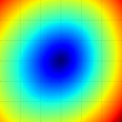
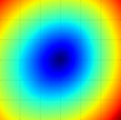
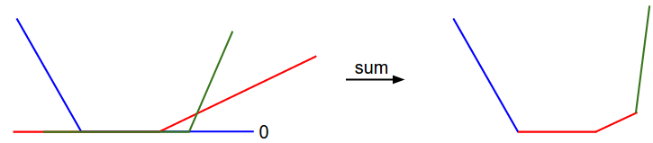

Optimization: Stochastic Gradient Descent
目录
Introduction
前两个讲义在图像分类的场景下介绍了两个关键部分：
-
score function - 得分函数 ，根据输入图像的像素数组计算的到对应分类类别的相应得分（eg：线性模型）
-
loss function - 损失函数 ，模型运行好坏的度量函数(eg: Softmax/SVM)
上述两部分分别对应李航老师定义的统计学习三要素其中的： 模型 策略 。第三个 要素为 算法 ，算法是用来进行优化模型，从而使得该模型在当前损失函数的度量下能 够变现的更好。
例如：线性得分函数具有 \(f(x_{i},W)=Wx_{i}\) ， SVM 损失函数有如下公式：
\begin{equation} L = \frac{1}{N}\sum_{i}\sum_{j \neq y_{i}}[max(0,\ f(x_{i};W)_{j} - f(x_{i};W)_{y_{i}}+1)] + \alpha R(W) \end{equation}较好的参数 W 计算得到的类别得分分布和真的标签数据 yi 相符。最终的损失值 较低。那么较好的参数如何去设置，本笔记将介绍第三部分 optimization 算法，用来 寻找 W ，能够使得最小化损失函数。
一旦理解了三个核心部分的原理，那么后续只需要更改 模型(parameterized function mapping) ，将模型更改为更为复杂的：神经网络和卷积神经网络。而损失函数和优化算 法都不需要改变。
Visualizing the loss function
损失函数常常都定义在高维空间（CIFAR-10 的线性分类器权值矩阵的纬度为 [10 by 3073])， 使得较难直接进行可视化。不过，也可以在某一个维度或者两个维度进行可视化去获取一些 灵感。例如，随机生成权值矩阵 W ，然后定一个随机的方向矩阵 W1 ，可以计算沿 着这个方向的损失 L(W+aW1) ，这样可以记录不同 a 对应的损失。就可以画出图示， x-axis 为 a 值，y-axis 为 损失函数。同样，可以引入另外一个方向矩阵，计算损失 L(W+aW1+bW2) ，这样就可以画出 x-axis 和 y-axis 分别代表 a,b ，不同颜色代 表不同的损失值。

 

SVM 多分类损失函数可视化（左图和中间都是面对一个样本）。右图为 100 的样本点的损失 函数可视化。蓝色表示低损失，红色代表高损失。可以看出损失函数为分段函数。
可以通过对损失函数进行分析来解释为什么损失函数是分段线性。
\begin{equation} L_{i} = \sum_{j \neq y_{i}}[max(0,\ w_{j}^{T}x_{i}-w_{y_{i}}^{T}x_{i}+1)] \end{equation}可以看到损失函数就是关于 W 线性函数加和。并且具有 0 作为阈值的分段属性。例如，具 有三个 1-d 的样本点的数据集，则 SVM 损失为：
\begin{equation} L_{0} = max(0,\ w_{1}^{T}x_{0}-w_{0}^{T}x_{0}+1)\ +\ max(0,\ w_{2}^{T}x_{0}-w_{0}^{T}x_{0}+1) \\ L_{1} = max(0,\ w_{0}^{T}x_{1}-w_{1}^{T}x_{1}+1)\ +\ max(0,\ w_{2}^{T}x_{1}-w_{1}^{T}x_{1}+1) \\ L_{2} = max(0,\ w_{0}^{T}x_{2}-w_{2}^{T}x_{2}+1)\ +\ max(0,\ w_{1}^{T}x_{2}-w_{2}^{T}x_{2}+1) \\ L = (L_{0} + L_{1} + L_{2})/3 \end{equation}假设，固定除了 w0 以外的其他变量，这损失函数就可以作是 w0 的函数。则 L0 对应则蓝色曲线，L12 对应这红色和绿色曲线。

图1 svm 分段可视化
可以看出 svm 损失函数是凸函数(convex function)。有很多讲义来研究如何进行有效的 凸优化(convex optimization)。一旦采取神经网络作为得分函数，那么损失函数就不再 是一凸函数，可视化后不再是一个碗状，而是崎岖不平的。
Non-differentiable loss functions 一些扭曲或者分段的损失函数中(max)，数学上 讲有一些数值点是不可微分的。一般采取在分段求积分，来解决这些问题。
Optimization
损失函数用来度量当前参数(W)时模型的好坏。优化算法的目标就是找寻参数(W)，最小 化损失函数。
Strategy#1: A first very bad idea solution: Random search
既然可以使用损失函数来读量参数的好坏，那么第一个策略就是随机去尝试不同的参数，从 中选取最好的参数即可。
# assume X_train is the data where each column is an example (e.g. 3073 x 50,000) # assume Y_train are the labels (e.g. 1D array of 50,000) # assume the function L evaluates the loss function bestloss = float("inf") # Python assigns the highest possible float value for num in xrange(1000): W = np.random.randn(10, 3073) * 0.0001 # generate random parameters loss = L(X_train, Y_train, W) # get the loss over the entire training set if loss < bestloss: # keep track of the best solution bestloss = loss bestW = W print 'in attempt %d the loss was %f, best %f' % (num, loss, bestloss) # prints: # in attempt 0 the loss was 9.401632, best 9.401632 # in attempt 1 the loss was 8.959668, best 8.959668 # in attempt 2 the loss was 9.044034, best 8.959668 # in attempt 3 the loss was 9.278948, best 8.959668 # in attempt 4 the loss was 8.857370, best 8.857370 # in attempt 5 the loss was 8.943151, best 8.857370 # in attempt 6 the loss was 8.605604, best 8.605604 # ... (trunctated: continues for 1000 lines)
在上述代码中，随机初始化了多组权值举证，计算了损失函数，记下最好的参数。然后就可 以在测试集上进行测试：
# Assume X_test is [3073 x 10000], Y_test [10000 x 1] scores = Wbest.dot(Xte_cols) # 10 x 10000, the class scores for all test examples # find the index with max score in each column (the predicted class) Yte_predict = np.argmax(scores, axis = 0) # and calculate accuracy (fraction of predictions that are correct) np.mean(Yte_predict == Yte) # returns 0.1555
获得了 15.5% 的准确率，比随机猜 10% 要好。
Core idea: iterative refinement
那么如何才能做到更好呢。核心思像就是，在很难或者不可能找到最优权值矩阵 W 的时 候，但是通过微调当前的权值 W 就可以获取稍好的损失不是特别难的时候。我们可以通 过随机选择不同的 W ，然后通过微调获取更好地损失结果。
核心策略：随机初始化权值举证，然后通过微调来获取更低的损失值。
Strategy#2: Random Local Search
第一种策略，可以看作是你尝试了在 W 权值矩阵空间的一个点，如果损失下降了，就保 留结果。本策略为随机初始化权值矩阵 W ，然后随机生成一个扰动 δ W ，计算 W+δ W 的损失值，如果结果是好的，那么就执行一次更新。
W = np.random.randn(10, 3073) * 0.001 # generate random starting W bestloss = float("inf") for i in xrange(1000): step_size = 0.0001 Wtry = W + np.random.randn(10, 3073) * step_size loss = L(Xtr_cols, Ytr, Wtry) if loss < bestloss: W = Wtry bestloss = loss print 'iter %d loss is %f' % (i, bestloss)
采取跟之前一样的计算，本次结果能够获取一个更好的测试准确率 21.4% 。
Strategy #3: Following the Gradient
策略 2 是在权值空间随机选取一个方向，然后看是否能够降低损失。其实，根据损失函数是 可以直接选取一个下降最快的方向。该方向就是损失函数的梯度。
梯度定义了函数在某点的斜率，可以是看作函数在某个点 x 产生一点扰动后，对该点 求一个除：
\begin{equation} \frac{df(x)}{dx} = \lim_{h \to 0}\frac{f(x+h)-f(x)}{h} \end{equation}Computing the gradient
有两种计算梯度的方法： 数值梯度 (numerical gradient)，该方法较为简单，但是计 算较慢，近似结果； 解析梯度 (analytic gradient)，该方法容易出错，但是快速和 准确。
Computing the gradient numerically with finite differences
利用上述求解梯度公式(4)，可以快速实现一个泛化函数，根据输入的函数 f 和向量 x 计算数值梯度。
def eval_numerical_gradient(f, x): """ a naive implementation of numerical gradient of f at x - f should be a function that takes a single argument - x is the point (numpy array) to evaluate the gradient at """ fx = f(x) # evaluate function value at original point grad = np.zeros(x.shape) h = 0.00001 # iterate over all indexes in x it = np.nditer(x, flags=['multi_index'], op_flags=['readwrite']) while not it.finished: # evaluate function at x+h ix = it.multi_index old_value = x[ix] x[ix] = old_value + h # increment by h fxh = f(x) # evalute f(x + h) x[ix] = old_value # restore to previous value (very important!) # compute the partial derivative grad[ix] = (fxh - fx) / h # the slope it.iternext() # step to next dimension return grad
上述代码遍历输入的向量的维度，然后添加一个微小的扰动 h ，然后计算在该维度上的 偏导数，最后返回梯度向量。
Practical considerations 在计算数值梯度的时候，常常需要使得 h 接近于 0。实际应用中，只需要设置一个非常小 的数字即可(1e-5)。更好的计算方法是采取中心微分公式： [f(x+h)-f(x-h)]/2h ，可以 获取更好的结果。
例如我们利用上述公式在 CIFAR-10 计算随机权值时的损失函数的梯度：
# to use the generic code above we want a function that takes a single argument # (the weights in our case) so we close over X_train and Y_train def CIFAR10_loss_fun(W): return L(X_train, Y_train, W) W = np.random.rand(10, 3073) * 0.001 # random weight vector df = eval_numerical_gradient(CIFAR10_loss_fun, W) # get the gradient
梯度值可以告诉我们损失函数在各个维度上的斜率，可以利用这些信息对权值进行更新：
loss_original = CIFAR10_loss_fun(W) # the original loss print 'original loss: %f' % (loss_original, ) # lets see the effect of multiple step sizes for step_size_log in [-10, -9, -8, -7, -6, -5,-4,-3,-2,-1]: step_size = 10 ** step_size_log W_new = W - step_size * df # new position in the weight space loss_new = CIFAR10_loss_fun(W_new) print 'for step size %f new loss: %f' % (step_size, loss_new) # prints: # original loss: 2.200718 # for step size 1.000000e-10 new loss: 2.200652 # for step size 1.000000e-09 new loss: 2.200057 # for step size 1.000000e-08 new loss: 2.194116 # for step size 1.000000e-07 new loss: 2.135493 # for step size 1.000000e-06 new loss: 1.647802 # for step size 1.000000e-05 new loss: 2.844355 # for step size 1.000000e-04 new loss: 25.558142 # for step size 1.000000e-03 new loss: 254.086573 # for step size 1.000000e-02 new loss: 2539.370888 # for step size 1.000000e-01 new loss: 25392.214036
Update in negative gradient direction 目标是最小化损失函数，所以权值更新为梯度的反方向。
Effect of step size
梯度告诉了损失函数的最速下降方向，但是并没有告诉我们在该方向上采取多大的长度能够 达到最大的下降。在后续的讲义中，可以看到步长的选择(learning rate)可以看作是最 为重要的几个超参之一。大步长能够使得损失函数快速下降，需要较少的迭代次数。但是需 要看到的是如果步长太长，会造成损失函数上升。

图2 可视化步长对损失函数的影响
图中显示了步长对损失函数的影响。在某个节点，计算梯度方向（白色代表着负方向）。小 步长会使得损失具有一个缓慢的下降过程。大步长会带来更快速的下降和不下降的风险。
A problem of efficiency 可以注意到，在求解数值梯度时，因为需要遍历各个维度来计算偏导数。在高维度参数情况 下，做一次参数更新就需要带来巨大的计算量。在神经网络模型中，由于参数规模急剧增大， 所以数值梯度计算并不能很好的应该这种场景。
Computing the gradient analytically with Calculus
解析梯度是直接对损失函数进行分析，通过运用数学知识直接得到对应的梯度计算公式。从 而可以快速的直接计算出对应的精准梯度。由于需要对损失函数进行解析，从而获取梯度公 式，该方法容易出错，并且不易检查。所以很多情况下，采取数值梯度和解析梯度值进行对 比，来检测解析梯度计算是否正确。
参考一下 SVM Loss 在单点情况：
\begin{equation} L_{i} = \sum_{j \neq y_{i}}[max(0,\ w_{j}^{T}x_{i}-w_{y_{i}}^{T}x_{i} + \delta)] \end{equation}可以对上述公式直接求微分：
\begin{equation} \nabla_{w_{y_{i}}}L_{i} = -\lgroup \sum_{j \neq y_{i}}{\Uparrow(w_{j}^{T}x_{i} - w_{y_i}^{T}x_{i} + \Delta > 0)} \rgroup x_i \end{equation}⇑ 为判别函数，如果条件满足则为 1，否则为 0。
对与 j ≠ yi ，梯度公式如下：
\begin{equation} \nabla_{w_{j}}L_{i} = \Uparrow(w_{j}^{T}x_{i} - w_{y_i}^{T}x_{i} + \Delta > 0)x_i \end{equation}Gradient Descent
迭代的计算损失函数的梯度值，然后更新参数，改过成叫做梯度下降(Gradient Descent)：
# Vanilla Gradient Descent while True: weights_grad = evaluate_gradient(loss_fun, data, weights) weights += - step_size * weights_grad # perform parameter update
上述的梯度下降就是所有神经网络优化的核心。
Mini-batch gradient descent
在训练数据规模较大的时候，计算全部样本集的损失值将会非常耗时。一般采取的就是将数 据集分成多个 batch ，来进行损失值的计算和梯度的更新。
# Vanilla Minibatch Gradient Descent while True: data_batch = sample_training_data(data, 256) # sample 256 examples weights_grad = evaluate_gradient(loss_fun, data_batch, weights) weights += - step_size * weights_grad # perform parameter update
增大 mini-batch 内的样本数量，会使得计算的梯度和全局梯度近似，这样就可以在一个较 小的样本集中得到全局梯度，从而实现梯度的快速更新。
极端一点，mini-batch 内的样本数量如果是一个，那么这个过程就叫做随机梯度下降 (Stochastic Gradient Descent(SGD))。
Summary

图3 机器学习数据流
数据流图总结：输入数据集 (x,y) ，权值矩阵随机初始化，在向前传导过程中，得分函数计 算类别得分，存储在向量 f 中。损失函数包含两部分：数据损失，用来度量计算的得分 与真实类别标签的差别；正则化损失，用来度量模型的复杂度。在梯度下降中，计算权值的 梯度，然后执行权值的更新。
- 本文引入了优化算法的中心思想，通过迭代更新权值来最小化损失函数
- 损失函数的梯度方向指明了权值更新的方向，从而使得损失函数能够朝着最速方向下降
- 可视化了步长&学习率对损失函数的影响
- 比较和讨论了数值梯度和解析梯度的不同
- 介绍了梯度下降来执行权值更新